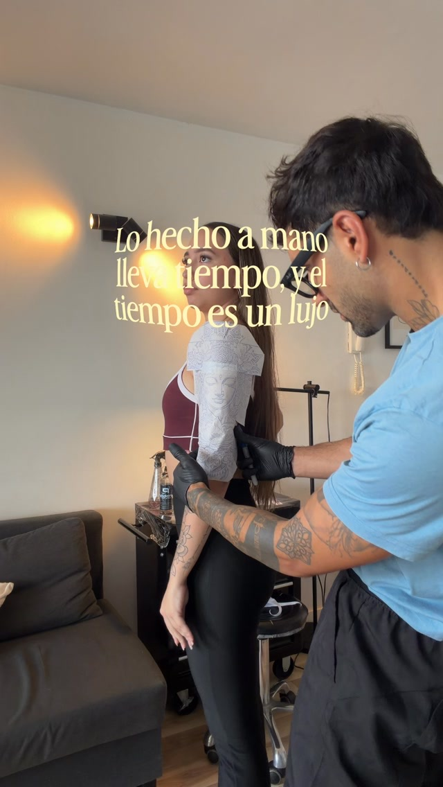
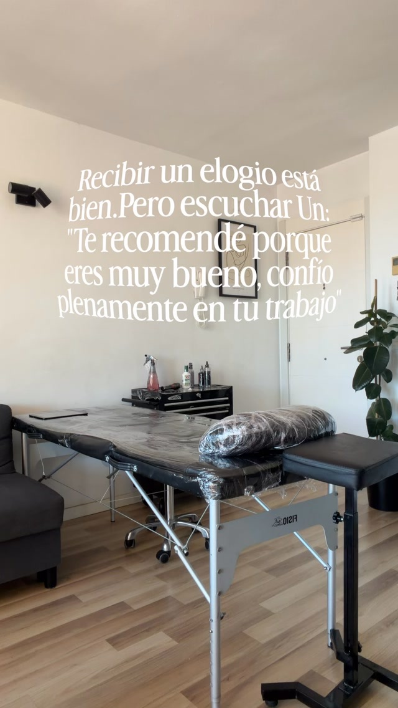

Doble AA Tattoo — Aaròn Manrique, tatuador de realismo en Mallorca
Aaròn Manrique — tatuador · de 🇦🇷 a 🇪🇸
Realismo
negro y gris
Arte sacro, mitología, retratos y animales. Piezas grandes, hechas sin prisa, en Mallorca.
Citas disponibles01 — El estudio
Lo hecho a mano lleva tiempo, y el tiempo es un lujo.
— Aaròn, en sus reels
Cada pieza parte de tu idea y se diseña para la zona donde va. Un estudio tranquilo en Mallorca, sin prisas y con tiempo para cada tatuaje.
- 🇦🇷Desde Argentina
- 🇪🇸Residente en Mallorca
- ✦Realismo · Fine line


02 — Trabajos
Lo que ya
está en la piel
Una selección de su Instagram. Toca una foto para verla grande y pedir algo así.
03 — Cómo se hace
Sin prisa,
paso a paso
- 01
Tu idea
- 02
El diseño
- 03
Las sesiones
- 04
El curado
04 — Mallorca
De Argentina
al Mediterráneo
ARG🇦🇷ArgentinaOrigen
MAD🇪🇸MadridDestacada
LON🇬🇧LondresDestacada
FRA🇫🇷FranciaDestacada
EGY🇪🇬EgiptoDestacada
PMI📍MallorcaBase
¿Estás en otra ciudad?
Dejar mi ciudad →05 — Cita